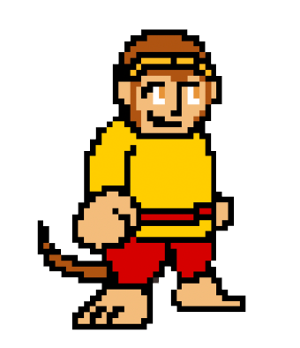
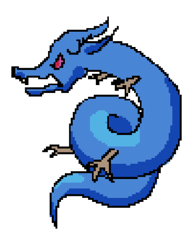
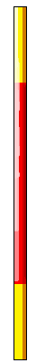
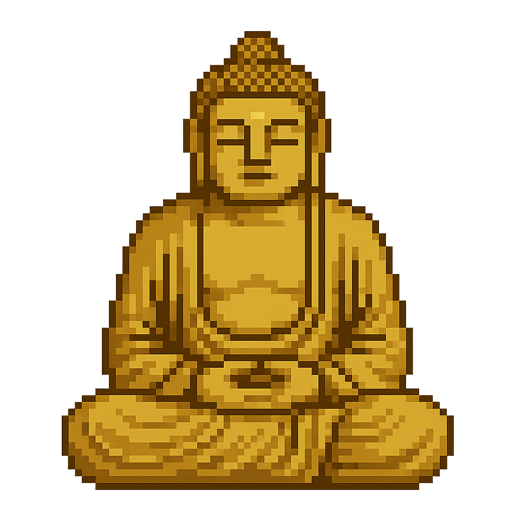
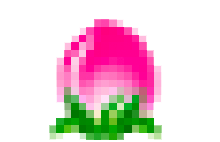
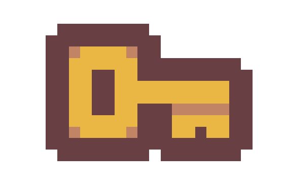
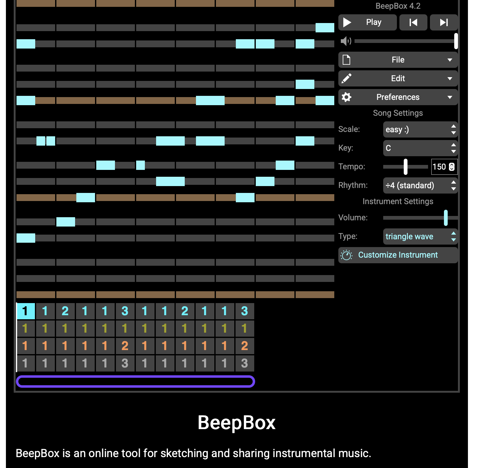

La création
Godot
Pour réaliser ce projet, j’ai utilisé un moteur de jeu open source assez populaire parmi les développeurs indépendants. Sa particularité réside dans sa flexibilité, sa légèreté et son interface intuitive. Godot permet la création de jeux en 2D et en 3D, tout en offrant des outils puissants pour la programmation visuelle ou scriptée via son propre langage, GDScript, proche du Python. Ce moteur permet aussi une gestion très fine des scènes, des animations, des effets sonores et visuels, et surtout une organisation modulaire du contenu, parfaitement adaptée au découpage narratif en chapitres comme mes 5 parties de l’histoire. De plus, Godot bénéficie d’une communauté très active, qui partage régulièrement des tutoriels, des ressources techniques et des solution, aux problèmes courants. Pour surmonter certains obstacles, j’ai notamment eu recours à des vidéos explicatives sur YouTube ainsi qu’à l’assistance de ChatGPT, qui m’a permis de mieux comprendre certaines mécaniques de programmation et d’optimiser mon travail.
Les personnages et objets
Tous mes srites adopte un style graphique de type pixel art, type rétro.
Il s’agit d’un style que j’aime beaucoup et qui est aussi assez facile a
manipuler sur les plateformes de créations artistiques. En effet,
beaucoup des objet présents dans le jeu sont de ma propre création
sur Photoshop.
Le jeu est composé de 5 platformer différents, représentant les 5
chapitre les plus importants de sa vie avant de devenir le premier
disciple du moine Tang Sanzang pour son voyage.
Sun Wukong

Il s’agit du héros de l’histoire. Durant la patie, le joueur suivra
son évolution, d’un singe innocent à au anti-héros rebelle et arrogant
sans limite qui finira par apprendre la leçon, ainsi devenant une
figure protectrice.
Toues les action de Sun Wukong sont composées de plusieurs images
consécutives réalisées sur Photoshop (voir
spritesheet).
Long Wang
Le Roi Dragon, l’une des figure qu’il devrait faire face dans le jeu est le deuxième personnage ayant un spritesheet, lui permettant le mouvement. Il est la première figure que Wukong devrait faite face après le vol du Jingu Bang.
Jingu Bang
Le Jingu Bang est un bâton magique que Sun Wukong transporte avec lui (de manière générale dans son oreille). Il le vole au Roi Dragon, à la troisième étape du jeu.
Bouddha
Dans le jeu Bouddha est la deuxième figure qu’il fera face, mais contre lequel il se fera vaincre et punir sévèrement après avoir semé le chaos dans le Ciel. Ce Sprite statique est issue de l’IA mais s’intègre très bien dans le jeu, respectant bien la dynamique.
Tang Sanzang

Le moine Tang Sanzang est le symbole de la fin du jeu, libérant Sun Wukong de son emprisonnement, devenant son premier disciple, l’accompagnant et le protégeant dans son voyage vers l’Ouest. Cette figure est une image que j’ai pixelisé et retravaillé sur Photoshop pour l’adapter au jeu.
Nuage magique
Dans le jeu le nuage est considéré comme une plateforme mais est en réalité une des capacité que acquiert Sun Wukong. C’est aussi la représentation de son intention vers l’immortalité. Il s’agit d’un objet réalisé avec Photoshop en l’adaptant a son format de plateforme Godot. Le style reste aussi une image avec des gros pixels pour garder une cohérence générale.
Xian Tao
Les pêches roses sont des pêches sacrées (xian tao), réservées aux dieux, apparaissant dès la première étape du récit. Bien que partout, ils ont surtout une fonction symbolique, représentant la faim du singe face à l’immortalité, le menant jusqu’à sa défaite.
Clé de passage
Le jeu est structuré en cinq étapes. Une clé peut être trouvée dans les trois premières, représentant la réussite. Ainsi, le joueur pourra découvrir la suite de l’aventure. Cet élément est directement pris d’une tilemap téléchargé depuis itch.io.
La musique
Au cours de la phase de sonorisation, j’ai cherché des musiques et bruitages cohérents avec l’univers mythologique. Grâce à BeepBox, j’ai pu créer plusieurs sons et effectuer des ajustements afin d’avoir une fluidité qui s’intègre naturellement au rythme du jeu, sans provoquer de lassitude auditive. L’un des défis était d’éviter l’effet répétitif des musiques en boucle, en veillant à ce qu’elles restent agréables et immersives.
Inspirations


Pour la création de Sun Wukong, j’ai réalisé un travail entièrement numérique à l’aide de Photoshop et d’une tablette graphique. Afin de garder une cohérence visuelle et de rester fidèle à l’univers de ce dernier, je me suis appuyé sur plusieurs images de référence trouvées en ligne. La première correspond à un style très simplifié et enfantin, tandis que la deuxième représente un Sun Wukong dans un style plus dynamique. Ces deux images m’ont servi de base pour créer une version personnelle du personnage, en adoptant un style graphique de type pixel art.